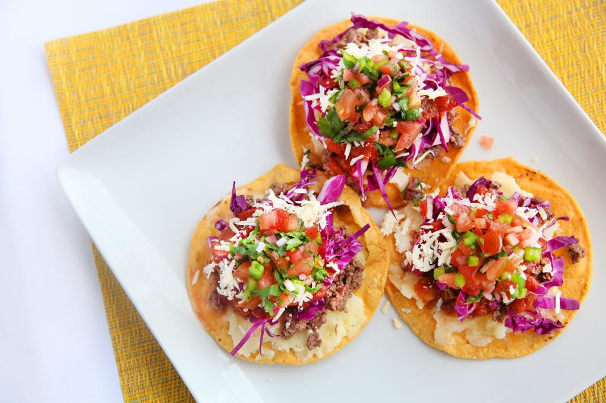

Tortilla with Quesillo

Ingredients
- 6 tortilla
- 1/2 cup of cheese
- vegetable oil for frying
- 1 cup chopped cabbage
- 2 lemons
- 1/4 cup tomato sauce
- 1 teaspoon cumin
- salt and pepper
Directions
- For the cabbage salad, mix the chopped cabbage with the lemon juice, salt and pepper to taste.
- Place a little cheese on one tortilla and cover with the other, fry in a pan with vegetable oil until the tortilla turns golden brown.
- Serve the tortilla with cheese, add the cabbage salad on top and place the tomato sauce on top.